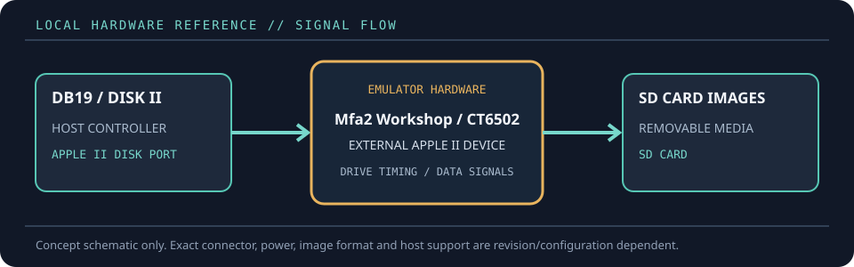

[ FLOPPY EMULATORS // IDENTIFIED HARDWARE ]
wDrive Apple II Disk Drive Emulator
A model-specific record for a physical floppy-drive emulator. It distinguishes the emulator hardware, removable media and host-facing drive signals; firmware support alone does not establish compatibility with a particular machine.

MODEL IDENTIFICATION: PRODUCT RECORD: wDrive Apple II Disk Drive Emulator. Compatibility is conditional on the actual host’s connector, controller, signal conventions, drive geometry, firmware and media configuration; do not infer fit from connector count or nominal drive size alone.
Recorded specifications
| Cataloged part | wDrive Apple II Disk Drive Emulator |
|---|---|
| Manufacturer / project | Mfa2 Workshop / CT6502 |
| Product family | SD-card Disk II / SmartPort device emulator |
| Drive bay / physical fit | External tabletop enclosure connected to the Apple II disk-drive port; Apple IIc use requires a separate DB19-to-IDC20 adapter. It is not a 5.25-inch bay mechanism. |
| Host interface / power | Apple II DB19 disk port or IDC20 connection through an appropriate Disk II interface/adapter. Standard SD/SDHC/SDXC socket; on-device buttons and screen. |
| Removable media / image format | FAT16/FAT32 SD card; floppy images include WOZ, NIB, EDF, DSK, DO and PO. HDV/2MG/PO files are supported in SmartPort/hard-drive modes. |
| Host compatibility | Apple II, II+, IIe, IIc and IIGS with model-specific connection/mode requirements. CT6502 notes the Apple IIc adapter requirement and distinguishes floppy from SmartPort operation on the IIGS. |
| Variants and identification | Cataloged as wDrive hardware from Mfa2 Workshop. Record firmware version, SD card format, host model, port/adapter and selected disk mode; firmware/menu behavior can change. |
Compatibility and handling
- wDrive can act as either a 5.25-inch floppy or SmartPort device; those are distinct host modes and image types, not simultaneous assurances.
- The vendor documents read/write for DSK, NIB, EDF and WOZ images; WOZ and other structured images are preferable when track-level/copy-protection information matters.
- Apple IIc adapter and IIGS slot/mode setup are host-specific. Follow the current wDrive instructions before connecting or changing configuration.
Before installation, compare the emulator’s exact revision and interface against the host service documentation. Confirm connector keying and pin one, power voltage/polarity, drive select, motor/disk-change signals, expected density and image geometry. Preserve a read-only copy of original disk images and configuration files before experimenting.
Model notes
Cataloged as wDrive hardware from Mfa2 Workshop. Record firmware version, SD card format, host model, port/adapter and selected disk mode; firmware/menu behavior can change.
FAT16/FAT32 SD card; floppy images include WOZ, NIB, EDF, DSK, DO and PO. HDV/2MG/PO files are supported in SmartPort/hard-drive modes.
Sources & further reading
- CT6502 — Apple II wDrive product information and setupVendor product record with disk image support, SD formats and host-specific setup notes.
- Nerdly Pleasures — wDrive and Floppy Emu comparisonIndependent hands-on comparison discussing Apple II disk-image emulation and WOZ support.
- Applesauce — WOZ disk image formatFormat reference for preservation of Apple II track-level disk structure.
Manufacturer statements describe product capability, not guaranteed operation on every revision of the named host. Confirm current manual, firmware and wiring before installation.